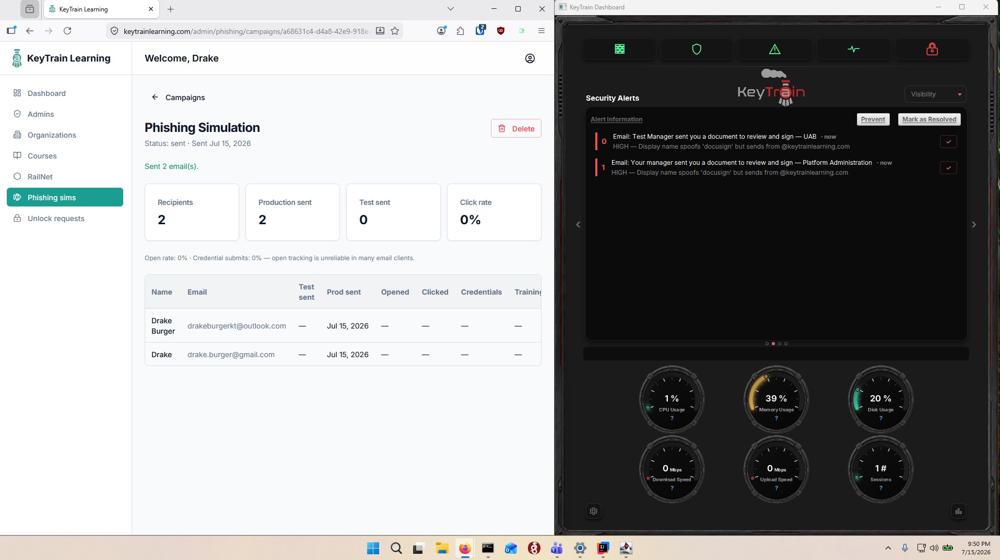
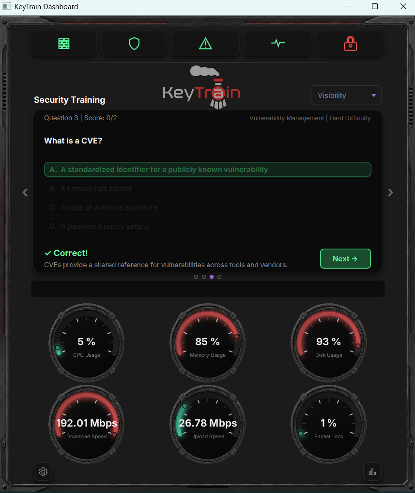
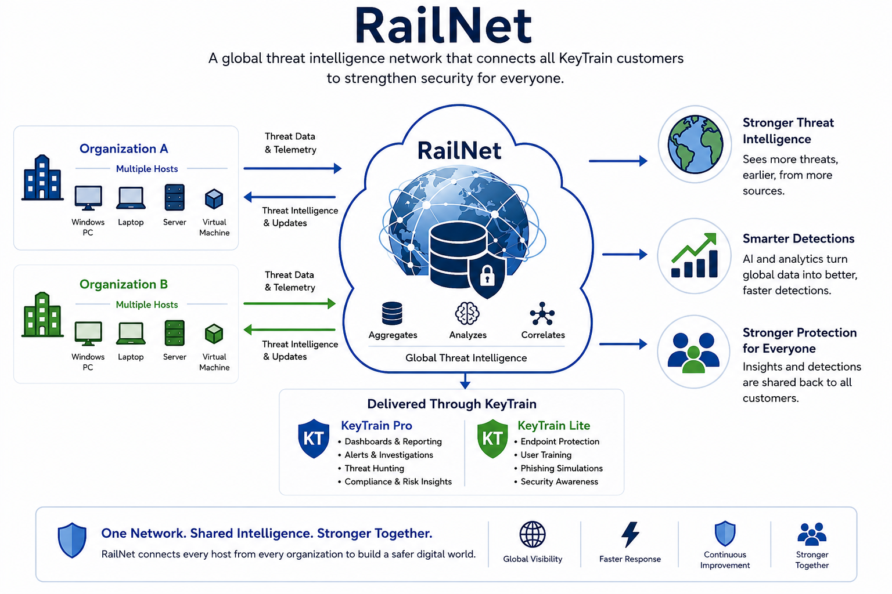

KEYTRAIN × NAUMF
Protecting the information
entrusted to the mission.
A practical approach to protecting NAUMF's people, information, finances, and ministry operations—without creating another complicated security program.
Donor informationBeneficiary informationFinancial recordsMinistry communications

Responsible stewardship
Could NAUMF answer these questions today?
Good cybersecurity starts with knowing what is entrusted to the organization, who can access it, and whether leaders can see the risks around it.
Would leadership know if a staff account were compromised?
Are devices handling sensitive information patched and protected?
Can staff recognize phishing and fraudulent payment requests?
Can NAUMF demonstrate reasonable cybersecurity practices?
What is being protected
NAUMF's digital trust extends far beyond computers.
Every record, account, message, and relationship carries an expectation of responsible care.
Cybersecurity is not only an IT responsibility. It is part of protecting the people, resources, and relationships entrusted to the organization.
Risk in plain language
Four areas can disrupt the mission.
People
Phishing, weak passwords, social engineering, and everyday mistakes.
Devices
Missing patches, vulnerabilities, insecure configurations, and suspicious activity.
Information
Improper access, sharing, retention, or exposure of sensitive records.
Leadership
Limited visibility, unclear priorities, and insufficient documentation of risk.
KeyTrain connects these risks into one practical system.Protect → Test → Train → Understand → Improve
The KeyTrain ecosystem
Four focused products. One connected defense.
Each product has a simple job—and together they create a continuous improvement loop.
HPROTECT & DETECT
Halo
Finds vulnerabilities, suspicious activity, configuration issues, security health concerns, and other technical risks.
HTEST
HOOKeD
Safely tests whether staff recognize phishing threats and identifies where reinforcement is needed.
KTRAIN
KeyTrain Learning
Delivers practical cybersecurity and compliance education, including training built around ministry environments.
RUNDERSTAND & IMPROVE
RailNet
Gives leadership reporting, trends, intelligence, compliance documentation, and broader risk visibility.
Training built for NAUMF
Protecting Donor, Beneficiary & Financial Information
Rather than generic awareness training, this course connects cybersecurity practices to the information ministry staff actually handle.
01
Safely collect, access, share, retain, and dispose of sensitive information.
02
Recognize threats involving donor, beneficiary, and financial information.
03
Apply practical cybersecurity safeguards during everyday ministry operations.
Live demonstration
Let's see the system work.
Follow one simple story: identify technical risk, test human readiness, deliver focused training, and give leadership visibility.
01
DETECT · HALO
Find risk before it becomes disruption.
See patch findings, vulnerabilities, security health, and actionable alert context.

02
TEST · HOOKeD
See how staff respond to a realistic phishing test.
Measure behavior safely and identify where coaching or remedial learning is needed.

03
TRAIN · KEYTRAIN LEARNING
Turn findings into focused learning.
Assign training based on organizational needs or observed human risk, then track completion and reinforcement.

04
REPORT · RAILNET
Give leadership a clearer picture of risk.
Translate technical and human findings into trends, intelligence, reports, and documentation leaders can use.

The closed loop
Security should improve after every finding.
HaloIdentifies risk
→HOOKeDTests people
→KTLTrains & reinforces
→RailNetGives visibility
↻Detect → Test → Train → Measure → Improve
A potential NAUMF deployment
Start small. Establish a baseline. Improve from there.
Establish technical baseline
Evaluate selected devices, vulnerabilities, security health, and existing technical risk.
Establish human baseline
Safely evaluate phishing readiness with a defined pilot group.
Train
Deliver targeted KeyTrain Learning courses based on NAUMF's environment and findings.
Measure
Provide understandable reporting and documentation for leadership.
Improve
Adjust training and technical controls based on what the data shows.
Protecting the mission together
Practical protection. Stronger staff. Clearer leadership visibility.
Our goal is not to give NAUMF another cybersecurity tool to manage. It is to provide a practical system for protecting information, strengthening staff, documenting responsible practices, and giving leadership a clearer view of risk.